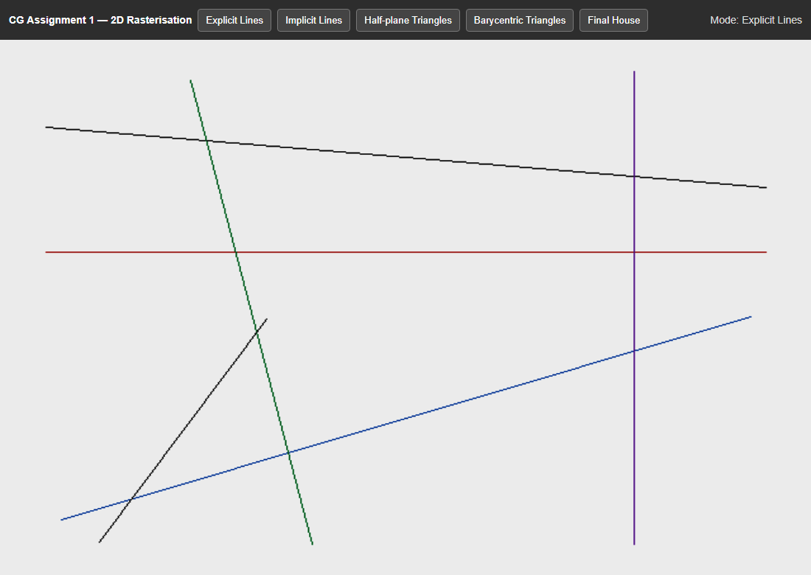
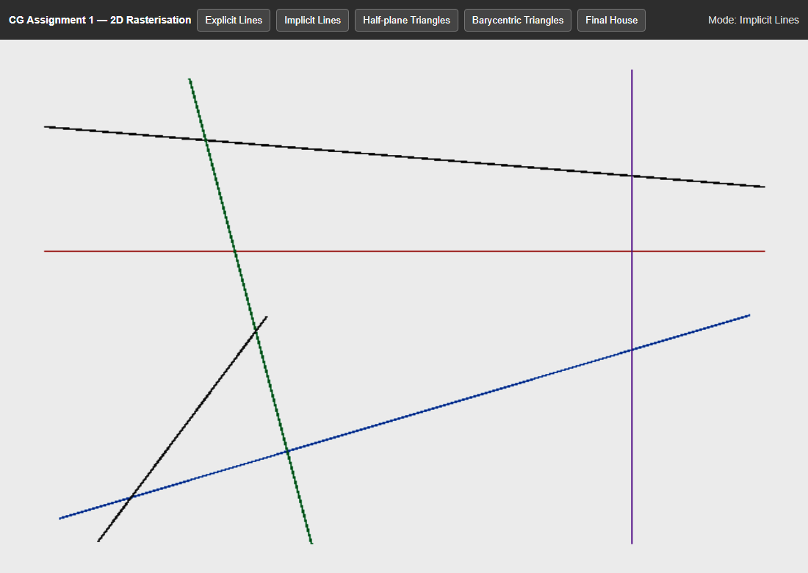
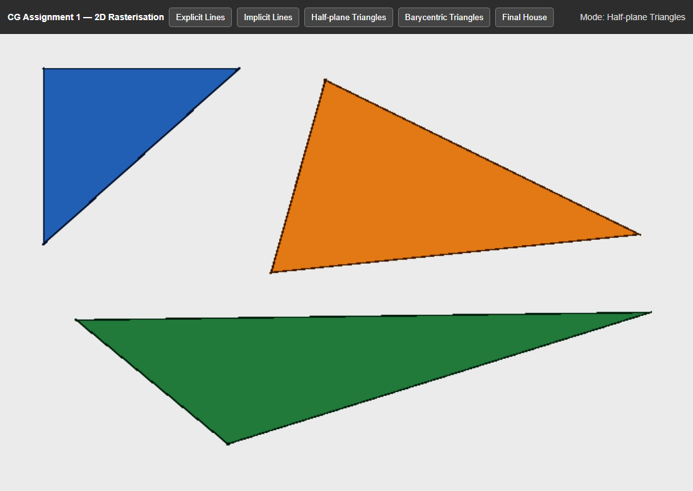
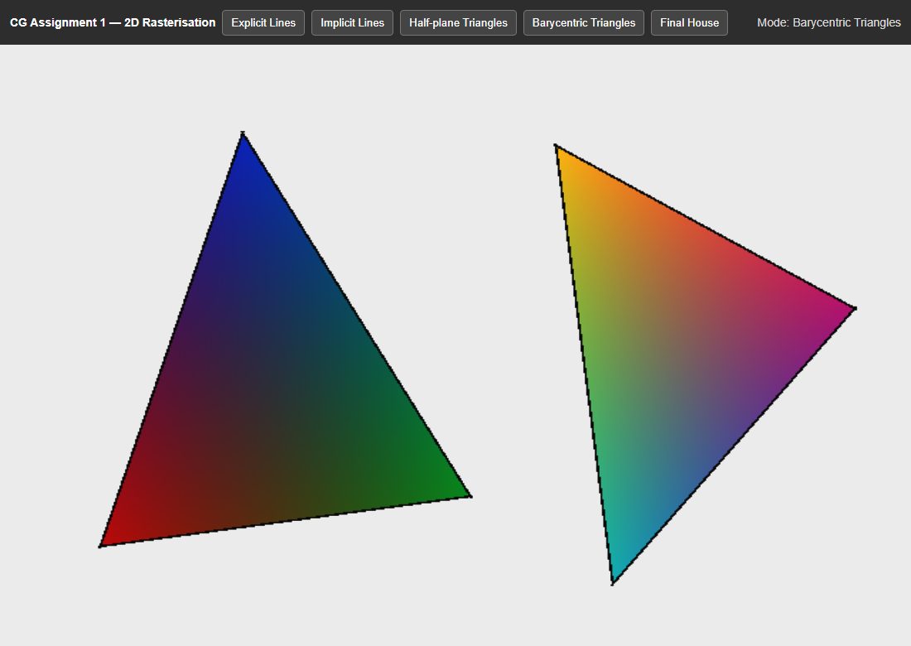
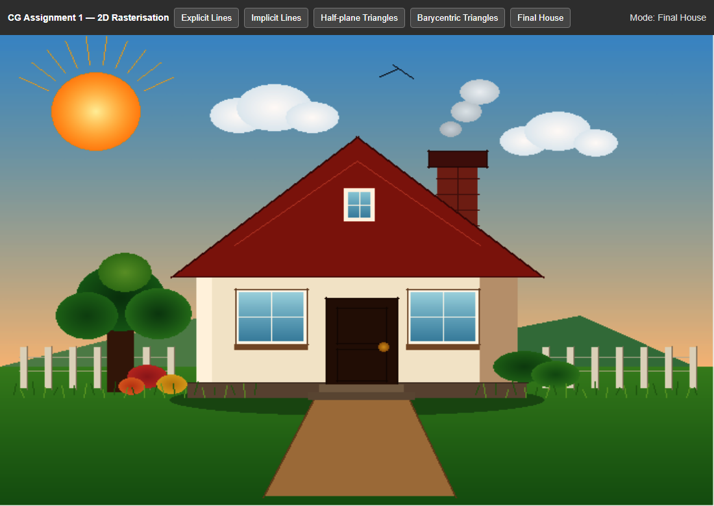

An explicit line is y = mx + b, with m = (y1 − y0) / (x1 − x0) and b = y0 − mx0. It is easy to sample, but the slope is undefined when x1 = x0. If |m| > 1, one step in x jumps more than one row, so a continuous line needs a sample on the other axis as well.
The implicit form F(x, y) = Ax + By + C = 0 does not choose a dependent variable. Here A = y0 − y1, B = x1 − x0 and C = x0y1 − x1y0. The perpendicular distance is d = |F| / √(A2 + B2), and the sign of F says which side of the directed line a point is on. A pixel is drawn when d is below a small tolerance. The same side test, repeated for three edges, fills a triangle.
The edge function EAB(P) = (Bx − Ax)(Py − Ay) − (By − Ay)(Px − Ax) is twice the signed area of ABP. P is inside when EBC(P), ECA(P) and EAB(P) share the sign of the area of ABC. Dividing those areas by the area of ABC gives the barycentric weights α, β and γ. They sum to 1, and P is inside when all three are non-negative. Colour is the linear blend α CA + β CB + γ CC.
Explicit lines. A vertical segment is drawn by stepping in y at fixed x. Otherwise the code compares |Δy| with |Δx|. A shallow line is ordered so x increases, and each integer x receives y = mx + b. A steep line is ordered in y, and x = (y − b) / m comes from the same equation. setPixel rounds to the nearest pixel. The branch only chooses which axis to sample.
Implicit lines scan the segment’s bounding box, padded by one pixel. Pixel (x, y) is set when |Ax + By + C| ≤ 0.75 √(A2 + B2). A tolerance of 0.5 px, as often quoted in the lectures, can skip a diagonal pixel that lies just outside that limit, so 0.75 px is used. The box clips the infinite line to a segment.
Triangle fill scans the bounding box at pixel centres (x+0.5, y+0.5). If the area is positive, a centre is covered when all three edge functions are at least zero; a negative area reverses the tests, so either winding is valid. Barycentric fill uses the same ratios. Any negative weight rejects the pixel; otherwise RGB is the weighted vertex colour. Rectangles are two triangles. The sun, clouds and canopy are triangle fans, so they use the same rasteriser. Mullions, rails and roof edges are implicit segments. Babylon.js only displays the framebuffer.
The explicit equation is the easiest to read, because it is y = mx + b. It is the least convenient to rasterise. Vertical lines need a separate loop, steep lines break up unless the major axis changes, and the slope becomes huge near the vertical.
The implicit test uses one expression for every direction. Implementation is a double loop, which is short but visits many empty pixels. F scales with segment length, so the comparison must use distance rather than raw F. The tolerance also makes some diagonals slightly thicker than a one-pixel explicit sample.
Barycentric weights are less obvious, because a point is a mixture of three vertices. They are the most useful for triangles: the same numbers accept or reject a pixel and interpolate colour.
Experiment 1 compares orientation. Figures 1 and 2 contain the same six segments: shallow (black), horizontal (red), diagonal (blue), steep (green), vertical (purple) and a second steep line (dark grey). Explicit sampling along y keeps the steep and vertical lines continuous; without that branch they would be dotted. The implicit image follows the same geometry. Its diagonals are sometimes one pixel thicker, which is the 0.75 px tolerance. Axis-aligned lines stay one pixel wide, because the next pixel is a full pixel away from the line.


Experiment 2 is triangle coverage (Figure 3). The blue triangle has a horizontal edge and a vertical edge. The orange triangle is acute. The green triangle is obtuse at its lower vertex. None of these shapes needs a special fill rule. A pixel centre is painted only when it is inside every edge half-plane. Axis-aligned edges use the same test. Implicit lines then outline each triangle.

Experiment 3 uses strongly different vertex colours (Figure 4): red, green and blue on the left, and yellow, magenta and cyan on the right. At a vertex one weight is 1 and the others are 0, so the colour matches that vertex. Around the centroid each weight is near one third, and the left triangle turns a dark mix of the three primaries. On an edge the opposite weight is 0, so only the two endpoints are blended. The change is smooth because each weight is linear in x and y.

Figure 5 is the house required by the final task: a rectangular body, a triangular roof, a door, windows, a chimney and straight decorative lines. Walls and the roof are half-plane triangles. Sky, glass and the sun use barycentric colour. The Babylon.js plane in main.js only holds the texture; it is not the house geometry.

Evaluating y = mx + b answers which row belongs to a given column. Rasterisation asks a different question: does this pixel belong to the primitive? The explicit form cannot even ask that of a vertical line, and a steep line answers it only after the axes are swapped. A triangle is not a function of x at all until it has been split into edges. An implicit test answers the coverage question directly, for every line direction, and three such tests answer it for a triangle. Barycentric coordinates are those half-plane distances normalised by the triangle area. They therefore reject outside pixels and, for inside pixels, weight the vertex colours in the same step. The explicit equation never builds those weights, which is why implicit and barycentric forms are the ones that carry a rasteriser from lines to shaded triangles.